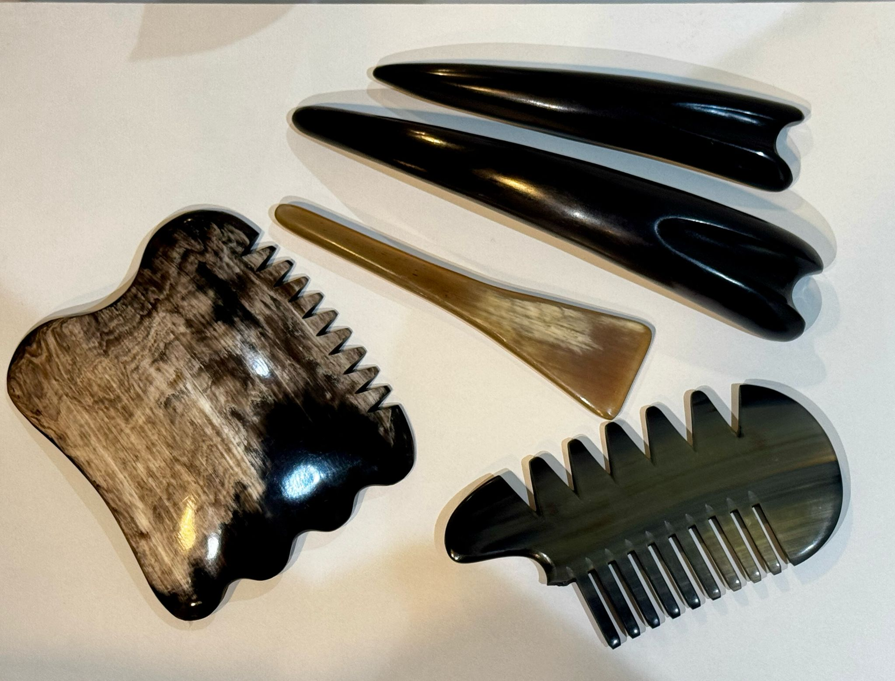
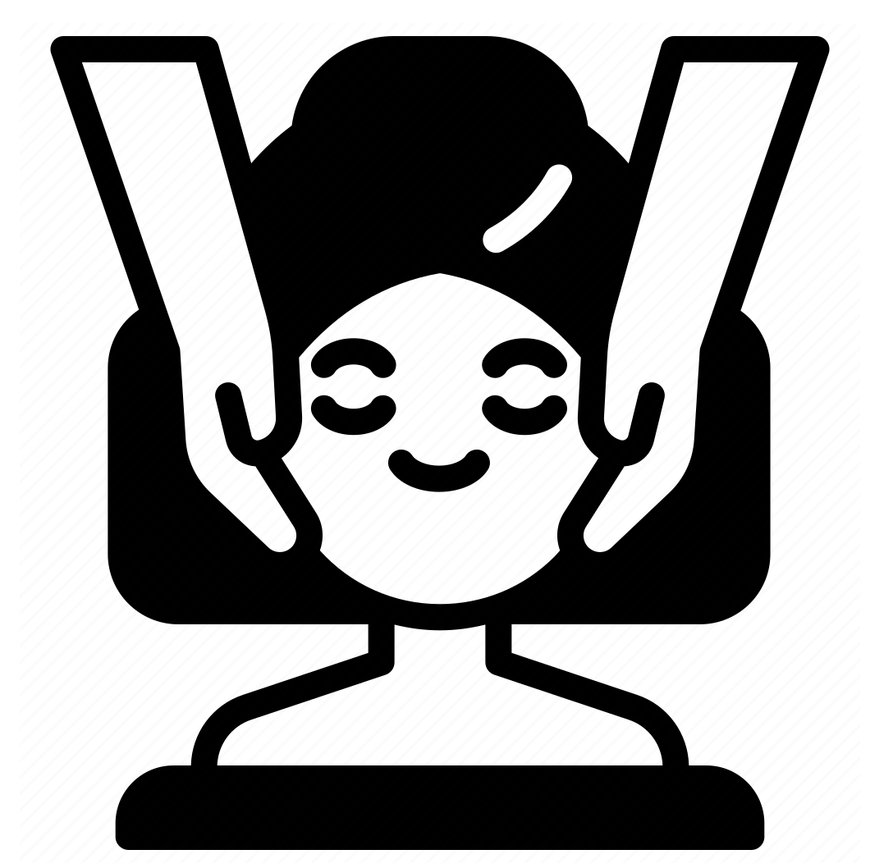
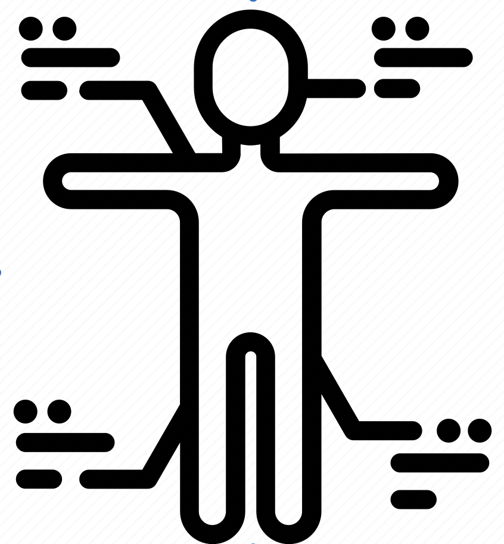

BoJin Treatment 拨筋
What is BoJin Treatment?

Bojin service is a traditional Chinese medicine practice that uses tool made of buffalo or ox horn to apply pressure and massage along the body’s meridian channels and acupressure points. It aims to unblock energy (Qi) flow, improve circulation, and promote healing and relaxation.
Difference between BoJin and Massage
Bojin targets meridians and acupressure points based on TCM principles to balance energy, while regular massage focuses more on muscle relaxation and general comfort without a specific energy framework.
The benefits of BoJin
- Eases muscle stiffness, chronic pain, and tension
- Boosts blood flow and aids detoxification
- Restores Qi flow for better vitality.
- Relaxes the body and mind
Types of BoJin Treatment
-
Head BoJin
Specialized treatment for skin rejuon and natural collagen production
-
Facial BoJin
Focuses on facial muscles and meridians to improve circulation and skin elasticity
-
Body BoJin
Full-body treatment targeting muscle tension and promoting overall wellness